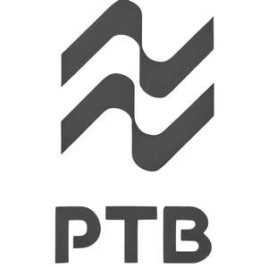

Trade Mark Journal No.2025/021 23 May 2025
UK00004179770 26 March 2025 (11,20)

- Class 11
- Showers; shower doors; sliding shower doors; doors for showers; shower doors with non-metallic frames; shower doors with a metal frame; shower doors made of glass; shower doors for sanitary purposes; shower units; shower screens; shower installations; shower stalls; shower enclosures; shower cabins; shower rooms; shower taps; shower valves; shower heads; shower apparatus; overhead showers; shower spray heads; hand-held showers; water-saving shower heads; faucets; taps; water faucets; faucets for pipes; faucets for sanitary purposes; bathtubs; baths; whirlpool tubs; whirlpool baths; massage bathtubs; spa pools; spa baths; spas [heated pools]; toilets; toilet bowls; toilet seats; toilets with integrated bidet water jets; toilet stool units with a washing water squirter; bidets; lavatory bowls; smart toilets; toilets with washing functions; water-saving toilets; bathroom basins; toilet basins; sanitary basins; washing basins; pedestal bathroom basins; bathroom cabinets with basins; sink units; parts and fittings for all aforementioned.
- Class 20
- Mirrors; mirror frames; mirror stands; bathroom mirrors; shaving mirrors; wall mirrors; cabinet mirrors; LED mirrors; illuminated mirrors; mirrors [furniture]; decorative mirrors; toilet mirrors; mirrored cabinets; smart defogging mirrors; anti-fog mirrors; hanging mirrors; cupboards fitted with mirrors; mirrors enhanced by electric lights; bathroom cupboards; bathroom cabinets; bathroom furniture; parts and fittings for all aforementioned.
PTB Technical Sanitary Ware (Jiangsu) Co., Ltd
Representative: Yeadon IP Limited